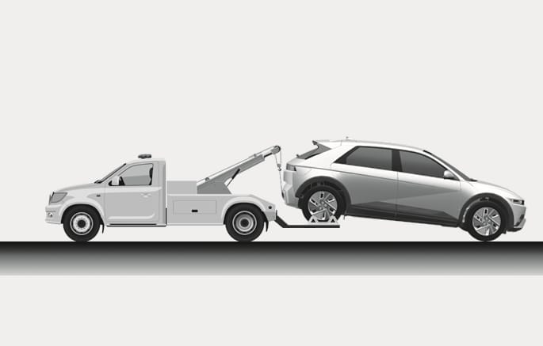
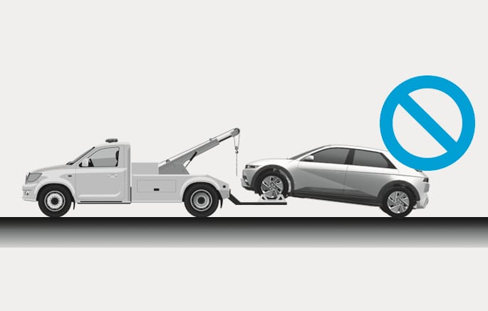

이륜구동 차량을 견인할 때

2C_TowingTwoWheelDrive
이륜구동 차량은 다음과 같은 방법으로 견인할 수 있습니다.
-
상차 견인
-
뒷바퀴 구속 견인(변속기 N, 주차 브레이크 해제 상태로 앞바퀴를 지면에 굴려 견인)
-
뒷바퀴가 지면에 닿은 상태로는 견인하지 마십시오.
-
측면 에어백 장착 차량
차량 견인 시 반드시 시동을 끄십시오. 시동 'ON' 상태에서 차량이 기울어지면 차량이 전복된 것으로 감지하여 측면 에어백이 전개될 수 있습니다.
-
뒷바퀴가 지면에 닿은 상태로 차량 앞부분을 들어 올려 견인하지 마십시오. 변속 장치가 손상될 수 있습니다.

2C_TowingBad
-
서스펜션 구속 방식으로 견인하지 마십시오. 범퍼 및 하부 부품이 손상될 수 있습니다.

2C_TowingBad_2
-
견인 중 범퍼 및 차량 하부 부품이 손상되지 않도록 주의하십시오.